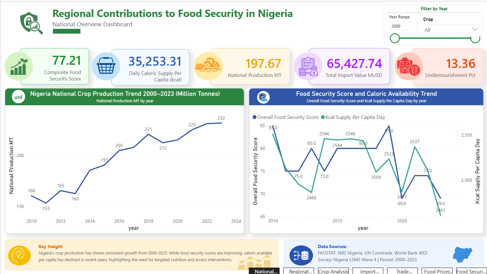
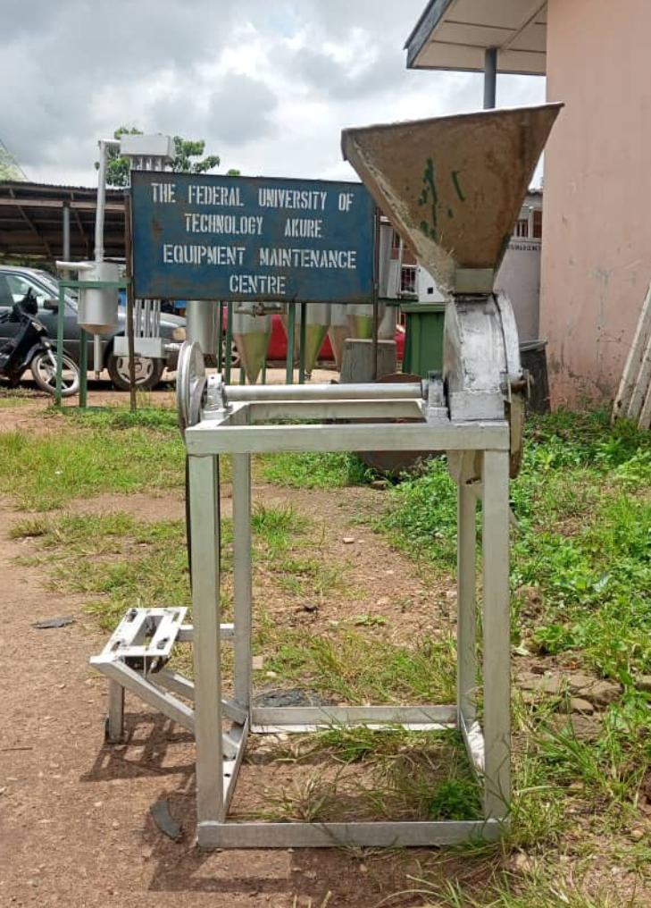

Nigeria Food Security
Analytical portfolio project on Nigeria's agricultural production system (earlier title: "Who Feeds Nigeria?").
View case studyAnalytical and engineering projects at the intersection of agriculture, environment, and data.

Analytical portfolio project on Nigeria's agricultural production system (earlier title: "Who Feeds Nigeria?").
View case study
Final-year engineering project (3-person team). Individual contribution: structural design.
View case study
An interactive exploration of yield, climate variables, and economic indicators in a 10,000-record dataset with unverified provenance.
View case study GitHub repository
An exploratory dashboard and audit testing whether soil records support the supplied fertilizer labels.
View case study GitHub repository
A dashboard comparing simulated farm output and derived yield rates across environmental and farm-scale groups.
View case study GitHub repository
A descriptive study of yield density and its associations with temperature, rainfall, and pesticide use.
View case study GitHub repository
National crop trends examined alongside a rainfall proxy for a central band of Nigeria.
View case study GitHub repository
An audited exploratory model of environmental and operational associations with farm output.
View case study GitHub repository